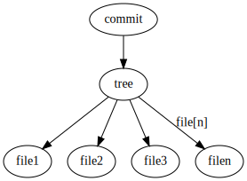
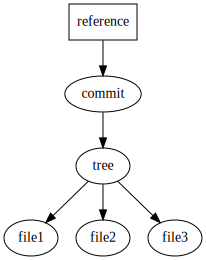
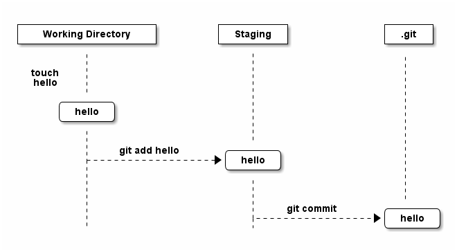
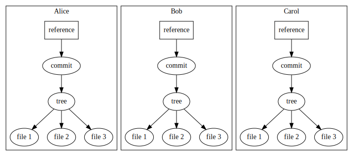
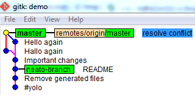
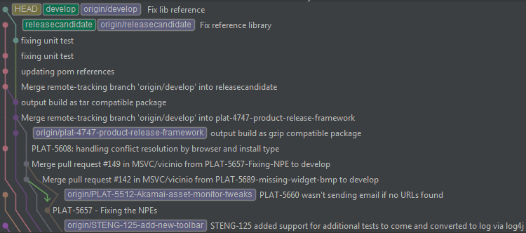

Git Training
Dan Hyun
Topics
Introduction
Git Now
Git Fundamentals
Git Commands
Everyday Git
Best Practices
Resources
What is Git?
Cross platform, distributed
source control management system.
Brief Background
Created in 2005 by Linus Torvalds
Used to maintain the Linux Kernel
Motivations for Git
| Performance | fast, reliable file integrity |
| Simplicity | no separate admin binaries |
| Flexibility | supports multiple protocols, methods of contributions, etc. |
Git in action
Figure 1. As of 2015-03-03
Git Now
Create a new git repository
$ git init demo
Initialized empty Git repository in /home/vagrant/demo/.git/Add a file
$ echo 'public class Hello { public static void main(String[] args) { System.out.println("Hello, World!"); } }' > Hello.java
$ javac Hello.java
$ java Hello
Hello, World!
$ git add Hello.javaSave it forever
$ git commit -m "Add important Hello.java file"
[master (root-commit) bf94b34] Add important Hello.java file
1 file changed, 1 insertion(+)
create mode 100644 Hello.javaCongratulations!
Now you know git!
Fundamental concepts
Objects
References
State
Distributed Nature
Objects
Every file is an object
Every commit is an object
These objects form a tree
Objects

References
HEADis a referenceBranches are references
Tags are references
Remotes are references
References

State
A given file can be in one of these four states:
Untracked
Tracked - not modified
Tracked - staged for commit
Committed
State

Distributed
No central server or authority
Most actions performed locally
Eliminates issues (politics) around commit access
Distribution

Git vs CVS/SVN
| Attribute | Git | CVS/SVN |
|---|---|---|
Tracking changes | Snapshot of all files | Per file |
History storage | Compressed binary objects with SHA1 checksum | Diff per file in .cvs/.svn directories |
Source of truth | Distributed | Centralized |
Git commands
Git config
Used to set and get configuration properties
Sample Truncated Config
$ git config --list
user.name=Dan Hyun
user.email=dan@hyunlabs.comConfig locations
| Level | Config Location | Git flag |
|---|---|---|
Project |
|
|
User |
|
|
System |
|
|
Who am I?
$ git config --global user.email "dan@hyunlabs.com"
$ git config --global user.name "Dan Hyun"INFO: This information goes into your commits
git init
Create a new Git repository
$ git init demo
Initialized empty Git repository in /home/vagrant/demo/.git/init
.git
├── branches
├── config (1)
├── description
├── HEAD (2)
├── hooks
│ ├── applypatch-msg.sample
│ ├── commit-msg.sample
│ ├── post-update.sample
│ ├── pre-applypatch.sample
│ ├── pre-commit.sample
│ ├── prepare-commit-msg.sample
│ ├── pre-push.sample
│ ├── pre-rebase.sample
│ └── update.sample
├── info
│ └── exclude
├── objects (3)
│ ├── info
│ └── pack
└── refs (4)
├── heads
└── tags| 1 | Project level config file |
| 2 | Current branch reference |
| 3 | Blob storage |
| 4 | Reference locations |
git add
Stages the given file(s) as is to the index
$ git add <file or path>add
$ touch hello
$ git add hello
$ git status
On branch master
Initial commit
Changes to be committed:
(use "git rm --cached <file>..." to unstage)
new file: hellogit objects
$ find .git/objects/ -type f
.git/objects/e6/9de29bb2d1d6434b8b29ae775ad8c2e48c5391git commit
Commit all staged objects to local repository
$ git commit [-m <message>]commit
$ git commit -m "Initial commit"
[master (root-commit) d400d55] Initial commit
1 file changed, 0 insertions(+), 0 deletions(-)
create mode 100644 hellogit objects
$ find .git/objects -type f
.git/objects/e6/9de29bb2d1d6434b8b29ae775ad8c2e48c5391 (1)
.git/objects/f9/66952d7e0715683ee935d201cd4ab22736c831 (2)
.git/objects/d4/00d55d841364e0bdf479c5e172210954ae3d5c (3)| 1 | Our hello file as a blob |
| 2 | Tree object containing fileset for commit |
| 3 | Commit object containing author and tree object |
tree object
git cat-file -p allows us
to inspect git objects
$ git cat-file -p f966952d7e0715683ee935d201cd4ab22736c831
100644 blob e69de29bb2d1d6434b8b29ae775ad8c2e48c5391 hello (1)| 1 | File mode object type object hash |
Differentiating git object types
Object types?
$ git cat-file -t e69de
blob
$ git cat-file -t f9669
tree
$ git cat-file -t d400d
commitHEAD master
$ find .git/refs/ -type f
.git/refs/heads/master (1)| 1 | New reference master added |
git references
$ cat .git/refs/heads/master
d400d55d841364e0bdf479c5e172210954ae3d5c (1)| 1 | The hash of the commit object |
I know Kung-fu

Everyday git
git add everything
$ git add .
$ git commit -m "#yolo"
[master (root-commit) e96454d] #yolo
2 files changed, 1 insertion(+)
create mode 100644 Hello.class
create mode 100644 Hello.javaNO
create mode 100644 Hello.class
Removing files
$ git rm Hello.class
rm 'Hello.class'
$ git status
On branch master
Changes to be committed:
(use "git reset HEAD <file>..." to unstage)
deleted: Hello.classRemoving Files
Don’t forget to commit
$ git commit -m "Remove generated files"
[master c36a69a] Remove generated files
1 file changed, 0 insertions(+), 0 deletions(-)
delete mode 100644 Hello.class.gitignore
.gitignore lives at the root of the repository
# ignore generated files
*.class
# ignore maven output
target/
# ignore gradle output
build/Branching
$ git branch neato-feature
$ git checkout neato-branch
Switched to branch 'neato-branch'git branch
$ git branch -v
master c36a69a Remove generated files
* neato-branch c36a69a Remove generated filesWorking on a branch
$ echo "Hello is very important" > README
$ git add README
$ git commit -m README
[neato-branch 1f1f2ae] README
1 file changed, 1 insertion(+)
create mode 100644 READMEGit branch
$ git branch -v
master c36a69a Remove generated files
* neato-branch 1f1f2ae READMEGitk
$ gitk
Merging
$ git checkout master
Switched to branch 'master'
$ git merge neato-branch
Updating c36a69a..1f1f2ae
Fast-forward
README | 1 +
1 file changed, 1 insertion(+)
create mode 100644 READMEMerged
$ git branch -v
* master 1f1f2ae README
neato-branch 1f1f2ae README
Collaboration
$ git remote add origin <URL> (1)| 1 | Any valid URL |
git push
$ git push origin master
Counting objects: 9, done.
Delta compression using up to 4 threads.
Compressing objects: 100% (7/7), done.
Writing objects: 100% (9/9), 1.09 KiB | 0 bytes/s, done.
Total 9 (delta 0), reused 0 (delta 0)
To ../demo-remote
* [new branch] master -> masterUpdating from remotes
$ git fetch
remote: Counting objects: 5, done.
remote: Compressing objects: 100% (3/3), done.
remote: Total 3 (delta 1), reused 0 (delta 0)
Unpacking objects: 100% (3/3), done.
From ../demo-remote
1f1f2ae..ecf757d master -> origin/masterMerge from origin/master
$ git merge origin/master
Updating 1f1f2ae..ecf757d
Fast-forward
Hello.java | 2 +-
1 file changed, 1 insertion(+), 1 deletion(-)All in one go
$ git pull origin master
remote: Counting objects: 5, done.
remote: Compressing objects: 100% (3/3), done.
remote: Total 3 (delta 1), reused 0 (delta 0)
Unpacking objects: 100% (3/3), done.
From ../demo-remote
* branch master -> FETCH_HEAD
1f1f2ae..ecf757d master -> origin/master
Updating 1f1f2ae..ecf757d
Fast-forward
Hello.java | 2 +-
1 file changed, 1 insertion(+), 1 deletion(-)Git push
What happens when
code changes?
$ git push origin master
To ../demo-remote
! [rejected] master -> master (fetch first)
error: failed to push some refs to '../demo-remote'
hint: Updates were rejected because the remote contains work that you do
hint: not have locally. This is usually caused by another repository pushing
hint: to the same ref. You may want to first integrate the remote changes
hint: (e.g., 'git pull ...') before pushing again.
hint: See the 'Note about fast-forwards' in 'git push --help' for details.Conflict
$ git pull origin master
remote: Counting objects: 5, done.
remote: Compressing objects: 100% (3/3), done.
remote: Total 3 (delta 1), reused 0 (delta 0)
Unpacking objects: 100% (3/3), done.
From ../demo-remote
* branch master -> FETCH_HEAD
ecf757d..fd10976 master -> origin/master
Auto-merging Hello.java
CONFLICT (content): Merge conflict in Hello.java
Automatic merge failed; fix conflicts and then commit the result.Resolving Conflict
$ cat Hello.java
<<<<<<< HEAD
public class Hello { public static void main(String[] args) { System.out.println("Hallo, Welt again!"); } }
=======
public class Hello { public static void main(String[] args) { System.out.println("Hello, World again!"); } }
>>>>>>> fd10976633568cd872f2d1aa64d97429957d73bbCommit
$ git commit -am "resolve conflict"
[master b0ae7d5] resolve conflictPush
$ git push origin master
Counting objects: 8, done.
Delta compression using up to 4 threads.
Compressing objects: 100% (4/4), done.
Writing objects: 100% (4/4), 514 bytes | 0 bytes/s, done.
Total 4 (delta 1), reused 0 (delta 0)
To ../demo-remote
fd10976..b0ae7d5 master -> masterFinal product

Best practices
Use commandline exclusively in the beginning
Adhere to your team’s work flow
Branch from your team’s canonical branch
Commit messages
Use consistent messaging
Use present tense and one line summary < 50 chars
Add paragraph with more details if needed
Example
Reads like a log file:
Fixes duplicate entry issue
Update schema to use primary key
Update DAO to accept additional paramUse ssh
$ git clone https://chucknorris.com/roundhouse.git
Cloning into 'roundhouse'...
Password for 'https://chucknorris.com':LAME
Ssh setup
Generate an ssh key pair
Add public key to central server
Enjoy not typing passwords
Generate ssh key
$ ssh-keygen -t rsa -C "dan@hyunlabs.com"Upload public key

Setup ssh config
~/.ssh/config
Host *
PreferredAuthentications publickey,keyboard-interactive
ServerAliveInterval 120
ServerAliveCountMax 30
IdentityFile ~/.ssh/id_rsa
Host stash
User git
Hostname chucknorris.com
Port 7999Enjoy
$ git clone stash:/roundhouse.gitWorkflows
Develop → Staging → Master
Commit to Master
Multibranch process
Maintain two canonical branches (master, develop)
Master represents what is on production (always "deployable")
Develop is coordination branch
Multibranch process
Branch from develop
Do some work
Merge from origin/develop if updated
Submit Pull Request*
Multibranch process

Resources
- Git Flow
Blog article by Scott Chacon about a workflow
- Pro Git
Free ebook by Scott Chacon (Github) and Ben Straub
- Git Immersion
Series of labs to learn git fundamentals
Resources continued
- Linus Torvalds on git
Video - Linus talks about git
- Interactive git cheat sheet
Interactive git command cheat sheet
- Suggested git branching model
A popular git branching model